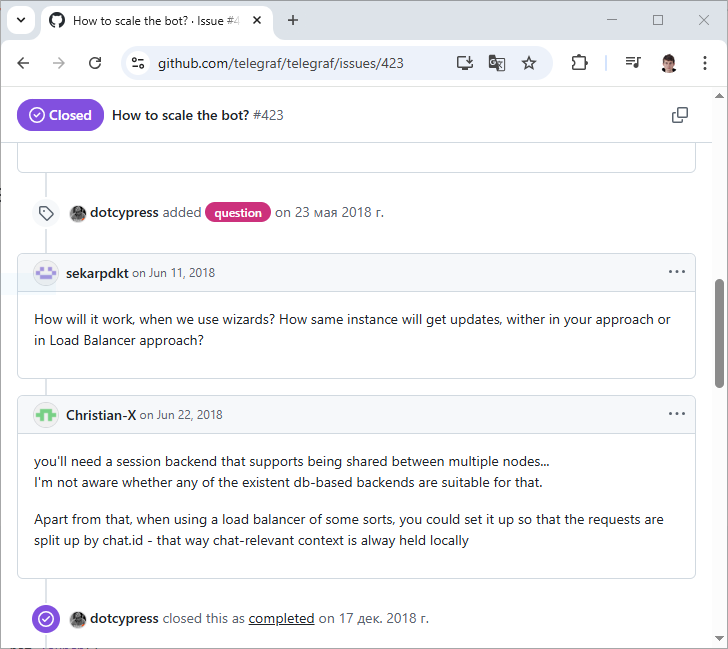
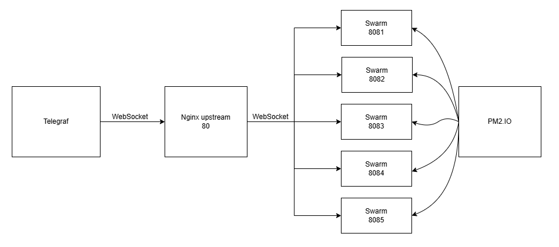
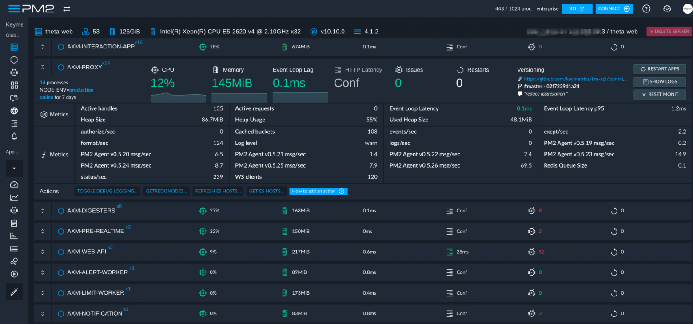

There are plenty of examples online showing how to connect ChatGPT 3.5 to a Telegram bot without tools. However, when it comes to handling a large number of users, there are no examples of distributing the load across multiple processes: all tutorials on the internet launch a monolith with a single replica.

Caption: https://github.com/telegraf/telegraf/issues/423
Additionally, in my experience with NodeJS, I’ve encountered issues where a large number of Promises in a pending state slow down the application due to the burden on the garbage collector. Adding third-party tools (e.g., allowing ChatGPT to call external functions with database queries) requires at least thinking about creating replicas of the monolith to avoid inflating the queue waiting for database data.
For load balancing, the most obvious tool is Nginx upstream. This tool receives a WebSocket connection from a new client on port 80 and proxies it in a round-robin fashion to ports 8081, 8082, ..., 8085, depending on the number of replicas. If a client remains inactive for 15 minutes, the connection is terminated; if a new message arrives, a new connection is established.

Caption: https://nginx.org/en/docs/http/ngx_http_upstream_module.html
Replicas store the chat history in Redis, allowing the context to be restored even if a new process handles the messages. Replicas will be created using PM2, the most native approach for NodeJS stack applications.

Caption: https://pm2.io/docs/plus/overview/
Additionally, with PM2, for $40/month, you can purchase ready-made incident notifications via Slack/Email and server monitoring with standard metrics such as CPUs (cores, hardware threads, virtual threads), memory capacity, network interfaces, storage devices (I/O, capacity), response time, etc. This saves money on DevOps until the project becomes self-sustaining.
To avoid tailoring the developer’s Linux machine to a single project, we’ll wrap Nginx in Docker. For this, let’s write a docker-compose.yaml:
version: '3.8'
services:
nginx:
image: nginx:1.27.4
ports:
- "80:80"
extra_hosts:
- "host.docker.internal:host-gateway"
volumes:
- ./config/nginx.conf:/etc/nginx/nginx.conf:ro
- ./logs/nginx:/var/log/nginx
And create the accompanying ./config/nginx.conf with the list of replicas:
user nginx;
worker_processes auto;
error_log /var/log/nginx/error.log warn;
pid /var/run/nginx.pid;
events {
worker_connections 1024;
use epoll;
multi_accept on;
}
http {
include /etc/nginx/mime.types;
default_type application/octet-stream;
log_format main '$remote_addr - $remote_user [$time_local] "$request" '
'$status $body_bytes_sent "$http_referer" '
'"$http_user_agent" "$http_x_forwarded_for"';
access_log /var/log/nginx/access.log main;
upstream local_websocket_servers {
server host.docker.internal:8081; # Using host.docker.internal from hosts shared from host machine
server host.docker.internal:8082;
server host.docker.internal:8083;
server host.docker.internal:8084;
server host.docker.internal:8085;
least_conn;
}
map $http_upgrade $connection_upgrade {
default upgrade;
'' close;
}
server {
listen 80;
server_name localhost;
location / {
proxy_pass http://local_websocket_servers$is_args$args;
# WebSocket-specific headers
proxy_http_version 1.1;
proxy_set_header Upgrade $http_upgrade;
proxy_set_header Connection $connection_upgrade;
# Preserve original headers and connection details
proxy_set_header Host $host;
proxy_set_header X-Real-IP $remote_addr;
proxy_set_header X-Forwarded-For $proxy_add_x_forwarded_for;
proxy_set_header X-Forwarded-Proto $scheme;
# Close upstream if client disconnects
proxy_ignore_client_abort on;
# Long-lived connection settings
proxy_read_timeout 86400s;
proxy_send_timeout 86400s;
# Buffer and performance settings
proxy_buffer_size 128k;
proxy_buffers 4 256k;
proxy_busy_buffers_size 256k;
}
}
}
To launch replicas via PM2, we’ll create a pm2.config.cjs. Here’s the package.json with scripts to start the project via npm start:
const path = require("path");
const os = require("os");
const dotenv = require('dotenv');
const readConfig = () => dotenv.parse("./.env");
const getPath = (unixPath) => {
return path.resolve(unixPath.replace('~', os.homedir()));
};
const createBun = (index) => ({
name: `bun-ws-${index}`,
script: "./src/server.ts",
interpreter: getPath("~/.bun/bin/bun"),
args: ["--server", `--port=808${index}`],
out_file: `./logs/pm2/bun-ws-${index}-out.log`,
error_file: `./logs/pm2/bun-ws-${index}-error.log`,
log_date_format: "YYYY-MM-DD HH:mm:ss",
merge_logs: true,
env: readConfig(),
});
module.exports = {
apps: [
/*
{
name: "bun-ws-1",
script: "./src/server.ts",
interpreter: getPath("~/.bun/bin/bun"),
args: ["--server", "--port=8081"],
out_file: "./logs/pm2/bun-ws-1-out.log",
error_file: "./logs/pm2/bun-ws-1-error.log",
log_date_format: "YYYY-MM-DD HH:mm:ss",
merge_logs: true,
},
*/
createBun(1),
createBun(2),
createBun(3),
createBun(4),
createBun(5),
]
}
As you can see, we pass the port number for orchestration via command-line arguments. This is convenient because the .env file remains static and doesn’t change at runtime. To run the project, we use Bun, a faster alternative to NodeJS, comparable in speed to Golang.
An agent is analogous to a scene in Telegraf—a model LLM using an isolated system prompt. The current agent in the Swarm can be changed via the changeToAgent function, similar to navigating scenes in a Telegram bot after clicking a button.
import { Adapter, addAgent, addCompletion, addSwarm } from "agent-swarm-kit";
import { OpenAI } from "openai";
export const OPENAI_COMPLETION = addCompletion({
completionName: "openai_completion",
getCompletion: Adapter.fromOpenAI(new OpenAI({ apiKey: process.env.OPENAI_API_KEY }))
});
export const TEST_AGENT = addAgent({
docDescription: "This agent operates within the nginx-balancer-chat project as a test agent, utilizing the OpenaiCompletion to inform users about the actual server port of one of 5 chat instances running on different ports and upstreamed by Nginx to port 80, extracting the port details from the chat history’s system message.",
agentName: "test_agent",
completion: OPENAI_COMPLETION,
prompt: `You are a test agent for Nginx Upstream. Tell user the server port from the chat history (system message)`,
dependsOn: [],
});
export const TEST_SWARM = addSwarm({
docDescription: "This swarm serves as the core structure for the nginx-balancer-chat project, managing a single TestAgent as both the sole member and default agent to handle user interactions, leveraging the CohereCompletion to report the specific port of one of 5 upstreamed chat instances balanced by Nginx to port 80.",
swarmName: "test_swarm",
agentList: [TEST_AGENT],
defaultAgent: TEST_AGENT,
});
The code in this example is programmed so that the LLM model reports which port the WebSocket request was proxied from. Instead of OPENAI_COMPLETION, you can use LMStudio, Ollama, or Cohere for individual agents—see the repository for more details.
import { Chat, getAgentName, Schema, History } from "agent-swarm-kit";
import type { ServerWebSocket } from "bun";
import { parseArgs } from "util";
import { TEST_SWARM } from "./lib/swarm";
declare function parseInt(value: unknown): number;
type WebSocketData = {
clientId: string;
};
const { values } = parseArgs({
args: process.argv,
options: {
server: {
type: "boolean",
},
port: {
type: "string",
},
},
strict: true,
allowPositionals: true,
});
History.useHistoryCallbacks({
getSystemPrompt: () => [
`The server port is ${SERVER_PORT}. Tell him that port ASAP`
]
});
const SERVER_PORT = parseInt(values.port);
if (isNaN(SERVER_PORT)) {
throw new Error(`Server port is not a number: ${values.port}`);
}
if (values.server) {
Bun.serve({
fetch(req, server) {
const clientId = new URL(req.url).searchParams.get("clientId")!;
if (!clientId) {
return new Response("Invalid clientId", { status: 500 });
}
console.log(`Connected clientId=${clientId} port=${SERVER_PORT}`);
server.upgrade<WebSocketData>(req, {
data: {
clientId,
},
});
},
websocket: {
async open(ws: ServerWebSocket<WebSocketData>) {
await Chat.beginChat(ws.data.clientId, TEST_SWARM);
await Schema.writeSessionMemory(ws.data.clientId, { port: SERVER_PORT });
},
async message(ws: ServerWebSocket<WebSocketData>, message: string) {
const answer = await Chat.sendMessage(ws.data.clientId, message, TEST_SWARM);
ws.send(
JSON.stringify({
data: answer,
agentName: await getAgentName(ws.data.clientId),
})
);
},
async close(ws: ServerWebSocket<WebSocketData>) {
console.log(`Disconnected clientId=${ws.data.clientId} port=${SERVER_PORT}`);
await Chat.dispose(ws.data.clientId, TEST_SWARM);
},
},
port: SERVER_PORT,
});
}
console.log(`Server listening http://localhost:${SERVER_PORT}`);
If you’re interested in developing chats with more than one agent, check out the documentation.